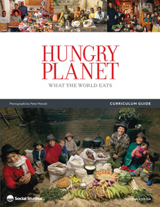
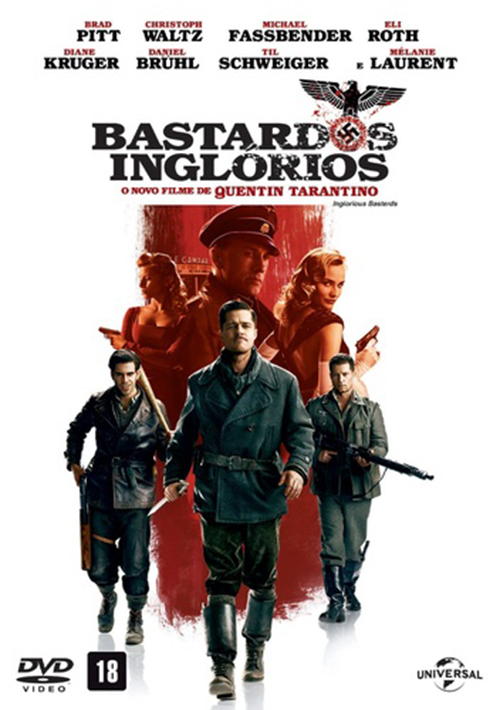
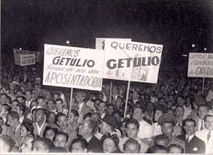

Filme 1917
Essa aula foi dada para nós assistirmos um filme, se chamava 1917, contava a historia da primeira guerra mundial, nos ajudou a entender sobre mais fatos sobre a primeira guerra mundial, foi uma atividade demasiadamente interessante para compreender fatos de um jeito dinâminico.

Doutrina Monroe
Essa aula aprendemos mais sobre a Doutrina de Monroe, vimos artes , sátiras e imagens retratando sobre o assunto. Foi feito um exércicio sobre o que aprendemos sobre tal assunto e mais uma dimânica que ajudou a compreensão do assunto
Filipinas
Foi um trabalho para entender como eram os países antes de sua colonização e como ficaram pós, foi um assunto divertido porem uma atividade que era um pouquinho complicado de achar informações sobre.

Hungry Planet
Atividade realizada em sala onde analizavamos a quantidade de comida comprada por diferentes familia do mundo, variando culturas e classes sociais. Foi utilizdo o site da TIME (um site de noticias americanos) para fazer esta pesquisa

Mundo Bipolar
Atividade Realizada em sala, tinhamos de criar uma linha do tempo em dupla baseado em filmes sobre a segunda guerra mundial e alinharmos cronologicamente com a história, fontes de pesquisa foram resumos dos próprios filmes e os filmes que foram disponilizados pelo professor.
República Liberal
Criamos a cidade Geminha 2, uma atividade em que tinhamos de criar uma nova capital para o Brasil, situar sua região, ambientação, vegetação e entre outros temas... Foi uma atividade divertidade e que ajudou a incentivar a nossa criatividade da criação dessa atividade

Era Vargas
Fizemos uma atividade comparando a República Oligarquica com a Era Vargas, vendo prós e contras e depois discutindo em turma sobre as melhores decisõe e o que melhorou em cada governo, algo para influencias a descoberta e ensinar os alunos debaterem entre si.